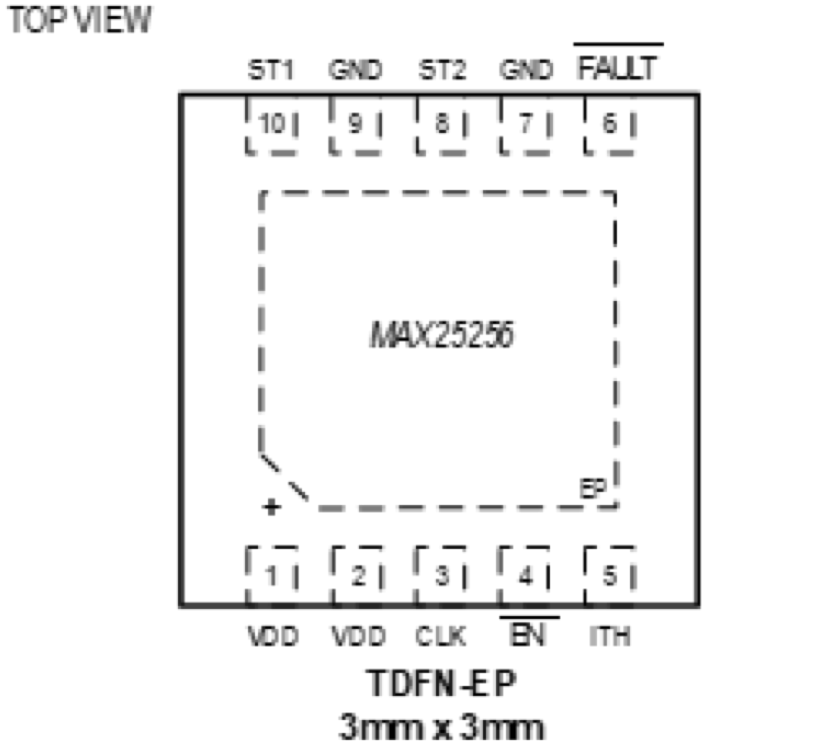

MAX25256

Pin Description
| PIN | NAME | FUNCTION |
|---|---|---|
| 1,2 | VDD | Power Supply. Bypass VDD to ground with a 1µF capacitor as close as possible to the device. |
| 3 | CLK | Clock Input. Connect CLK to GND to enable internal clocking. Apply a clock signal to CLK to enable external clocking. |
| 4 | EN | Enable Input. Drive EN low to enable the device. Drive EN high to disable the device. |
| 5 | ITH | Overcurrent Threshold Adjustment Input. Connect a resistor (RLIM) from ITH to GND to set the overcurrent threshold for the ST1 and ST2 outputs. Do not exceed 10pF of capacitance to GND on ITH. |
| 6 | FAULT | FAULT Open-Drain Output. The fault open-drain transistor turns on when there is either an overtemperature or overcurrent condition. |
| 7,9 | GND | Ground |
| 8 | SßT2 | Transformer Drive Output 2 |
| 10 | ST1 | Transformer Drive Output 1ß |
| - | EP | Exposed Pad. Internally connected to GND. Connect EP to a large ground plane to maximize thermal performance; not intended as an electrical connection point. |